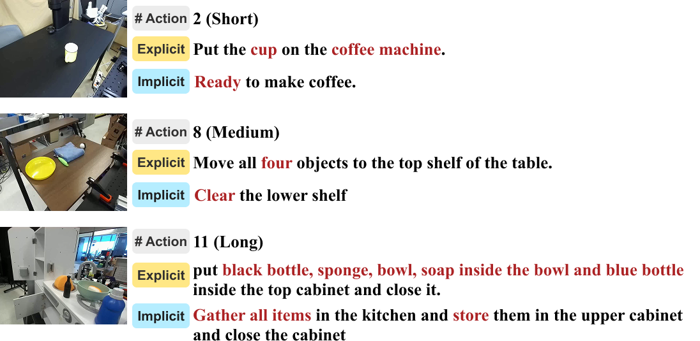
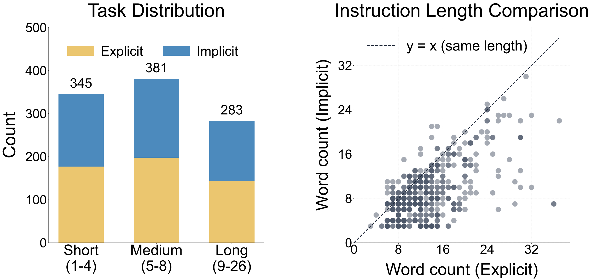
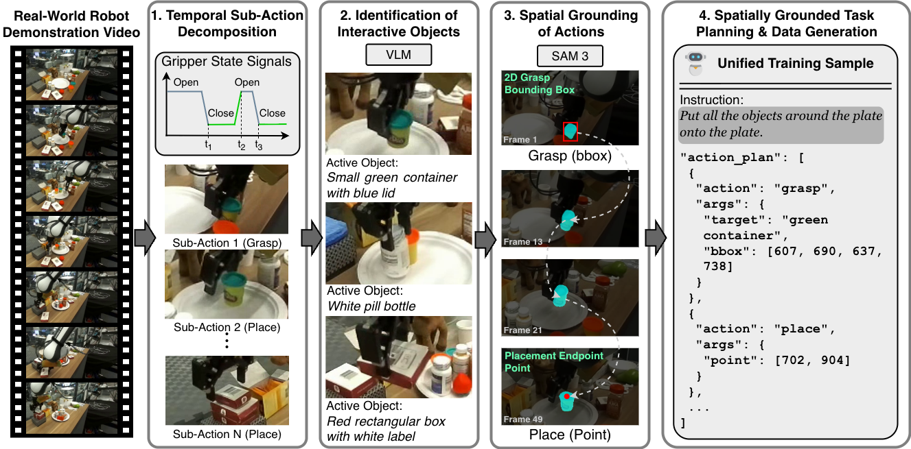

Spatially Grounded Long-Horizon Task Planning in the Wild
Highlights
- We introduce a benchmark GroundedPlanBench that jointly evaluates hierarchical action planning and spatial action grounding in the wild, enabling evaluation of whether VLM-generated plans are spatially feasible for robot manipulation.
- We propose an automated training data collection framework from robot video demonstrations that leverages VLM video understanding and grounding capabilities to automatically discover hierarchical sub-action plans and spatially grounded robot–object interactions from long-horizon demonstrations, improving spatially grounded planning in VLM-as-Planner.
- Through systematic evaluation of closed-source and open-source VLMs, we show that spatially grounded long-horizon planning remains a major challenge in current VLM-as-Planner, and demonstrate that V2GP significantly improves planning and grounding performance, validated both on our benchmark and through real-world robot manipulation experiments.
GroundedPlanBench


GroundedPlanBench is a benchmark for evaluating embodied planning from robot manipulation videos. Each task pairs an implicit instruction — conveying only the intent (e.g., "Ready all the objects in the kitchen to be washed") — with an explicit counterpart that specifies exact objects and actions (e.g., "Put the red bottle, sky blue cup, and blue bottle into the sink"). Tasks vary in length from short to long, requiring models to ground language in visual scenes and reason over multi-step plans.
Data Generation Framework

V2GP (Video-to-Grounded Plan) is a training data generation framework that extracts spatially grounded sub-action plans from real-world robot demonstration videos. It operates through four stages:
(1) Temporal Sub-action Decomposition. Raw demonstrations are segmented into sub-action units using gripper state signals, providing a structured temporal backbone for downstream analysis.
(2) Interactive Object Identification. A VLM analyzes each segment to identify the objects being actively manipulated, bridging visual observations with semantic understanding.
(3) Spatial Grounding of Actions. SAM localizes target objects and placement endpoints within each segment using bounding boxes and points, grounding abstract actions in the physical scene.
(4) Spatially Grounded Task Planning. The grounded sub-action primitives are integrated with both explicit and implicit task instructions to form complete, spatially-aware plans.
The collected data are used to fine-tune VLM-as-Planners, simultaneously improving hierarchical task planning (what to do) and spatial grounding (where to act) for long-horizon manipulation tasks.
Results
Task Success Rate (TSR ↑)
Action Recall Rate (ARR ↑)
Real-World Experiments
Throw the papers away in the box.(x20)
Pick up all the vegetables and place them on the right edge of the table.(x20)
Cook the vegetables.(x20)
Place toothpaste in the box.(x10)
Store all vegetables inside the drawer, and close.(x20)
Open drawer, put green block inside the drawer.(x10)
Pack all the items.(x20)
BibTeX
@misc{jung2026spatiallygroundedlonghorizontask,
title={Spatially Grounded Long-Horizon Task Planning in the Wild},
author={Sehun Jung and HyunJee Song and Dong-Hee Kim and Reuben Tan and Jianfeng Gao and Yong Jae Lee and Donghyun Kim},
year={2026},
eprint={2603.13433},
archivePrefix={arXiv},
primaryClass={cs.RO},
url={https://arxiv.org/abs/2603.13433},
}